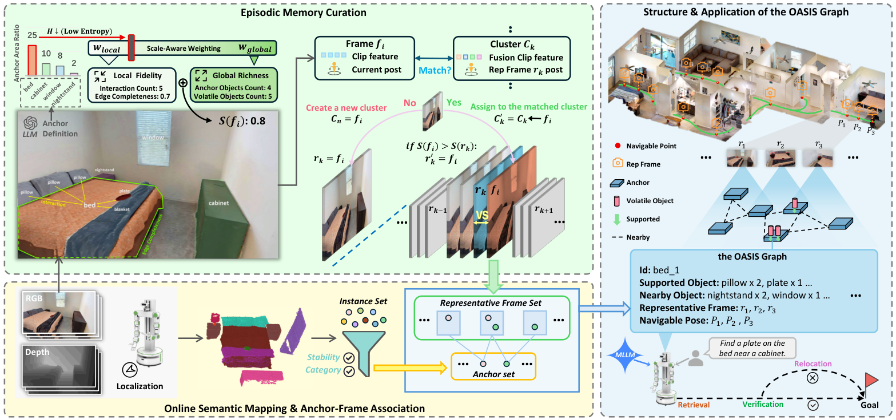

Paper Analysis
01 · A Retrieval System Built on RGB-D Mapping

Kaiyao Liao et al. · CC BY, as stated in the manuscript · Original figure, unmodified · Paper & Caption ↗
OASIS 的输入包括 RGB、深度和机器人定位信息。它基于 DualMap 的在线实例建图获得三维实例、包围盒和视觉特征，再构建可供语言查询的记忆。它不是仅凭单目 RGB 学习深度和位姿的前馈模型，与 LingBot-Map 的输入条件和主要目标不同。
系统区分较稳定的大型 anchor 与可能移动的小物体。anchor 是语义索引，例如桌、床等；对象与 anchor 的 supported 关系来自空间支撑判断，nearby 主要来自共视关联，不应理解成完整且精确的三维关系图。每个 anchor 还关联代表图像及其相机位姿。
anchor 类别由 LLM 从预定义的常见室内类别集合中选择，并过滤不稳定实例。它不是无约束地发现任意语义类别。墙、地板和天花板等不作为该定义下的 anchor；实例还需跨帧稳定出现。文中稳定性阈值 n 未明确给出，复现时需补充。
输出可以是目标实例 ID 和适合观察它的历史相机位姿，也可以驱动后续导航、抵达验证与重新定位。图中的语义关系负责找到相关证据，图像负责补充颜色、细节和上下文；仅有一个类别标签不足以区分多个相似物体。
Paper Analysis
02 · Choosing Representative Frames
原图左上是图像记忆筛选。新帧与已有 cluster 比较：CLIP 余弦相似度超过 0.8，且平移小于 2 m、旋转小于 45°，才满足匹配条件；否则建立新 cluster。相似外观而位置不同的图像不应被直接合并，这也是联合条件的作用。
cluster 保存聚合视觉特征与代表帧。聚合特征按帧质量评分加权；只有新帧评分高于原代表帧才替换图像。这样保留的不是简单最近一帧，而是比较适合之后识别和关系判断的观测。
总分 S=w_g S_g+(1−w_g)S_l。全局项 S_g 衡量画面包含多少 anchor 和其他物体，数量饱和后不再加分；局部项 S_l 衡量 anchor 边界完整程度及其交互对象数量，并组合最好的 anchor 与平均质量。它们是手工设计的启发式量，不是从未来导航或几何 loss 学出的价值函数。
设 M 为 anchor 数，r 为 anchor 总区域占比，pⱼ 为各 anchor 的相对区域占比，H=−Σpⱼlog pⱼ。当 M≤1 时 w_g=1−r；多个 anchor 时 w_g=(1−λ)(1−r)+λH/log M，λ=0.7。较均衡的多物体视图增加全局权重，单个大物体特写增加局部权重。
教学算例：只出现一个 anchor，覆盖画面 80%，则 w_g=0.2，局部质量获得 0.8 权重。这解释了为什么系统不会一律偏好物体最多的远景。这里是公式示例，不是论文实验样本。
每个 anchor 最多关联五张代表帧，但 anchor 与 cluster 的数量并无全局常数上限。JSON 中只存图像路径也不意味着图像存储消失。评估压缩时应同时计入图像、特征、实例地图和索引，而不是只统计图的文本长度。
S = w_g S_g + (1 − w_g) S_l S_g = [α min(M, A_max) + (1 − α) min(N_obj, O_max)] / [α A_max + (1 − α) O_max] V_i = β E_i + (1 − β) min(C_i, C_max) S_l = [γ max_i V_i + (1 − γ) mean_i V_i] / [β + (1 − β) C_max]
Paper Analysis
03 · Language Routing, Visual Inspection, and Instance Matching
检索第一步只给 LLM 文本形式的 anchor 图和用户查询，选最多三个相关 anchor。它先利用类别与支撑、邻近对象缩小范围。这一步不要求把全部历史图像送入大模型，也不直接输出三维几何。
第二步将代表图像交给 VLM，并标注图中可见 anchor 的 ID。VLM 判断是否看到目标、选最佳视图，并返回 anchor ID、self/on/nearby 关系、目标类别和简短外观描述。由于图中标了所有可见 anchor，模型可以修正初始候选，选择同图中的其他 anchor。
第三步用这些结构化结果约束实例级 CLIP 匹配。self 可直接指向 anchor；on 或 nearby 将候选限制到相应实例集合，再结合类别与外观描述。无合适候选时回退到全局匹配。语义图因此主要改变“去哪里找”，视觉证据再决定“具体是哪一个”。
附录提示词图也暴露了潜在误差：一个“桌上红盘子”的示例返回 target_relation=self，尽管目标描述是 plate、anchor 是桌面区域。按正文规则 self 应表示 anchor 本身；这一示例存在语义不一致，不能把结构化输出视为可靠真值。这里是对附录示例的核查，不代表已测得系统错误率。
另一个需要区分的能力是类别匹配与实例重识别。颜色、形状一致可以支持候选检索，却不能单独证明两个时间点看到的是同一个盘子。论文让 VLM进行比较，但没有因此解决所有身份歧义。对几何融合，这类不确定匹配尤其不能直接写成硬对应。
Paper Analysis
04 · Updating Evidence When Objects Move
导航到历史观察位姿后，系统比较参考图像与当前图像。目标仍在则完成；目标不在则尝试重新定位。历史语义并不被当成永远有效的位置标签，当前观测负责检验它是否过时。
导航途中不持续重建完整稠密地图，而是复用局部检测。未匹配到旧实例的新对象进入 transient visual buffer，保存对象 crop、整帧上下文及相机位姿；每个暂存 track 保留置信度最高的图像。该 buffer 与探索阶段的长期 anchor 记忆承担不同时间尺度的证据。
目标消失时，先用 CLIP 检索 buffer 中最相似的五个候选，再让 VLM 查看候选的完整上下文并与参考图比较。如果没有证据，LLM 根据语义推测其他可能 anchor，排除已经检查的位置，随后通过移动与观察验证。
“可能在另一个地方”是搜索假设，不是新观测，也不是已恢复的三维位置。该闭环的价值在于用假设安排下一次观察，而不是把语言模型生成的位置直接写成地图事实。
论文没有端到端训练语义 memory，也没有语义 loss 反向更新几何网络。CLIP、LLM、VLM 在推理中承担编码、路由、核验等角色；实验配置使用 GPT-5.2 和 Gemini 3 Pro。其性能同时依赖这些基础模型和实例地图质量。
Paper Analysis
05 · What the Main Results Establish
在 Sr3D/ScanNet 关系检索上，Acc@0.1 和 Acc@0.25 表示预测实例与真值三维框 IoU 达到阈值的比例，越高越好。OASIS overall 为 44.0/37.4，CORE-3D 为 41.8/35.6；但 hard 子集为 38.7/33.3，低于 CORE-3D 的 41.3/34.7，view-dependent 的 Acc@0.25 也较低。局部 anchor 结构没有解决所有复杂空间关系。
OpenLex3D/Replica 的细粒度实例检索 mAP 从 DualMap 的 6.19 到 6.58，AP50 从 11.72 到 12.52。这里的收益比部分导航指标小，不能仅引用最高提升比例代表全部检索任务。
HM3D 导航使用三个场景：静态 78 次、anchor 内移动 54 次、跨 anchor 移动 53 次试验。成功要求停在目标 1 m 内，动态任务最多三次尝试。静态/anchor 内/跨 anchor 成功率分别为 85.9/81.5/77.4%，DualMap 为 70.5/64.8/60.3%。这些衡量目标获取，不是深度精度。
跨 anchor 消融中，移除 transient visual buffer 后成功率降到 56.6%，移除语义探索后为 73.6%，完整系统为 77.4%。在这一协议下，新鲜视觉证据的作用比语义回退带来的增量更大；这不能推广成任何任务中视觉都比语义重要，但有助于理解该系统收益来源。
真实家庭环境包含三个房间、13 个 anchor，各 30 次静态与动态试验；成功率为 86.7% 和 76.7%。样本规模有限，错误包括属性混淆、小物体漏建图、远距离关系和临时 buffer 漏检；不能从这些结果直接推断开放世界长期运行可靠性。
| Evaluation | OASIS | Comparator | Scope |
|---|---|---|---|
| Sr3D overall Acc@0.25 | 37.4 | CORE-3D 35.6 | 关系检索 |
| Sr3D hard Acc@0.25 | 33.3 | CORE-3D 34.7 | 困难子集未获胜 |
| Cross-anchor navigation SR | 77.4% | DualMap 60.3% | 53 次动态试验 |
| Cross-anchor SR without TVB | 56.6% | 完整系统 77.4% | 当前视觉证据的重要性 |
Paper Analysis
06 · Curation Ablations and Runtime Costs
八个 Replica 场景的代表帧覆盖率表示至少出现在一张保留图像中的真值实例比例。联合视觉与位姿聚类、再用自适应评分时为 91.13%；仅空间聚类为 83.99%，仅视觉聚类为 86.64%。但平均 cluster 数分别为 6.5、5.3、3.8，容量不同，因此不能把全部差异解释为同预算选择更好。
同样使用联合聚类时，全局评分覆盖率为 90.82%，局部评分为 89.30%，自适应为 91.13%。相对全局评分仅增加 0.31 个百分点。机制合理不等于有大幅独立收益，消融数字应与叙述强度一致。
分层检索消融中，没有 LLM/VLM 时 Acc@0.1/0.25 为 28.4/21.6，只加 VLM 为 36.5/30.2，只加 LLM 为 32.8/26.9，两者都用为 44.0/37.4。这支持路由与视觉检查互补，但并不分离基础模型能力、调用预算和结构设计的全部影响。
论文在 RTX 4090 平台报告的建图处理时间，Replica 为 0.312 s/frame，DualMap 为 0.276；ScanNet 为 0.198，对照为 0.163。仅换算处理率约 3.2 和 5.1 帧/秒，不能称为 30 FPS 全流程。内存表也应按原文口径引用，不把所有数字都解释成显存。
上述计时不含 API 推理。附录平均初始 LLM 路由为 4.2 s、初始 VLM 检查为 14.9 s、抵达验证为 8.1 s、临时 buffer 检查为 12.7 s、最终验证为 7.6 s；不是每次任务都走完所有阶段。异步运行可以与导航重叠，但不会让模型等待成本消失。
Paper Analysis
07 · What Can Transfer to Streaming Reconstruction
OASIS 说明语义可以作为历史证据的地址：先找到相关 anchor，再取回图像；同时用新观测检验旧信息的时效性。这里的语义确实参与了记忆组织和读取，而不是单纯附加一个分割可视化。
但 JSON anchor 图、原图文件和实例点云不是 LingBot-Map 的压缩 KV。将其迁移为写入前语义融合，需要重新设计可微接口，并用未来几何损失验证历史表征的效用。OASIS 没有证明将 CLIP 特征加进 token 就会改善几何，也没有提供这条梯度路径。
可以借鉴的最小原则是：语义帮助决定证据相关性，几何与可见性约束是否能用于同一表面；新观测与旧记忆冲突时保留时间信息和不确定性。对动态场景，不要仅因相机回到同一位置或类别相同就融合。
与 SceneBound 合读后，实验问题更具体：语义方案是否在相同全局缓存与累计写入预算下，保留了更有利于未来几何的内容？OASIS 的覆盖率、检索和导航收益不能替代这一测量；我们仍需几何精度、完整度、边界质量以及未来帧误差。
因此，它适合作为语义索引和证据核验的参考，而不是当前研究的现成重建模块。第一版仍可使用训练期密集语义教师与轻量在线分支，不必立即引入每次查询都需多轮大模型调用的代理系统。以上迁移均为分析与待检验方案，尚未实施。
Discussion
Reading Questions
Is OASIS a semantic geometry-training method?
不是。它在 RGB-D 实例地图上组织证据并执行检索与导航，没有语义损失回传几何的实验。
Why keep images when a scene graph is available?
图提供类别与关系索引，图像保留颜色、细节与上下文，便于 VLM 核验；仅文本关系难以消除实例歧义。
Does top-five storage imply fixed global memory?
不意味着。每个 anchor 关联数受限，anchor、cluster、图像和地图仍可随探索增长。
What is the strongest link to our memory proposal?
语义决定去哪找证据，当前观测判断旧证据是否仍有效；是否改善压缩历史后的几何，需要另做预算匹配与梯度路径明确的实验。
References
One original figure is included under the manuscript’s stated CC BY license. Results are author-reported, not locally reproduced. Proposed connections to geometric memory remain untested.
Verified on 2026-11-05. Paper results refer to the linked versions. Repository references were checked on this date.